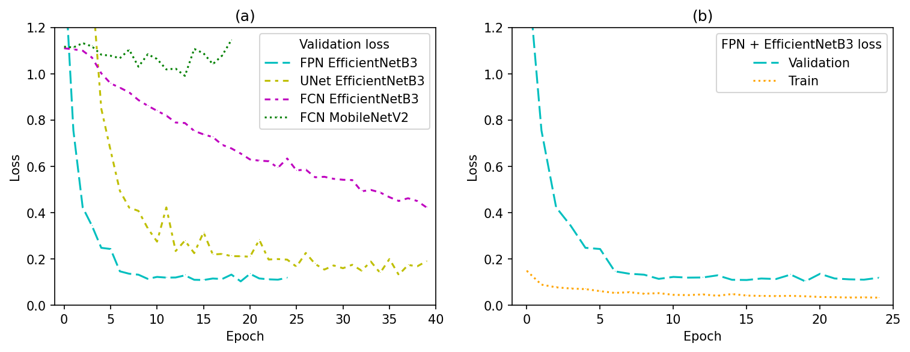

Lakehopper Vision
Contents
Lakehopper Vision#
High-Level Planning Vision Component
Datasets#
See: datasets/README.md
Training#
See: src/lakehopper_semseg/train.ipynb
Training was accelerated with a TPU through Google Research’s TPU Research Cloud program. Because demand for TPUs is so high it’s not easily possible to create a TPU node in the europe-west4 region. Instead, a v2-8 node in us-central1-f was used. Unfortunately it’s not possible to connect to that node from a VM in europe-west4. As such a VM was instead created in us-central1-f. Because of latency issues it’s hard to work on a Jupyter notebook from across the Atlantic. That’s why instead a headless script is executed over SSH instead. To create that such a script for every .ipynb notebook in the module and rsync it to the VM, use (substituting names where appropriate):
jupyter nbconvert --to script src/lakehopper_semseg/*.ipynb && rsync -vru --include-from gce-rsync-include ./ lakehopper-semseg-us:/home/pieter/vision
Once connected through SSH, to run the training script for all nine
encoder-decoder permutations, use the train_all.sh
script in src/lakehopper_semseg/. To only train certain permutations, use:
export DECODERS="FCN FPN"
export ENCODERS="MobileNetV2 InceptionResNetV2"
./train_all.sh

Inference#
See: src/lakehopper_semseg/inference.ipynb

Trained models#
Only the weights for the FPN + EfficientNetB3 model are included in the repository because the total size of all weights is too large for GitHub or GitHub LFS (3.1 GiB). For the weights of the other models, please contact me at pieter@pfiers.net.
TPU#
Creating:
EU, vm:
gcloud alpha compute tpus tpu-vm create lakehopper-semseg-eu-vm --zone=europe-west4-a --accelerator-type='v3-8' --version='tpu-vm-tf-2.9.1-v4'
EU, node:
gcloud compute tpus create lakehopper-semseg-eu-node --zone=europe-west4-a --accelerator-type='v3-8' --version='2.9.1'
US
gcloud alpha compute tpus tpu-vm create lakehopper-semseg-us --zone=us-central1-f --accelerator-type='v2-8' --version='tpu-vm-tf-2.9.1-v4'
US, node:
gcloud compute tpus create lakehopper-semseg-us-node --zone=us-central1-f --accelerator-type='v2-8' --version='2.9.1'
Starting: EU
gcloud alpha compute tpus tpu-vm start lakehopper-semseg-eu
US
gcloud alpha compute tpus tpu-vm start lakehopper-semseg-us